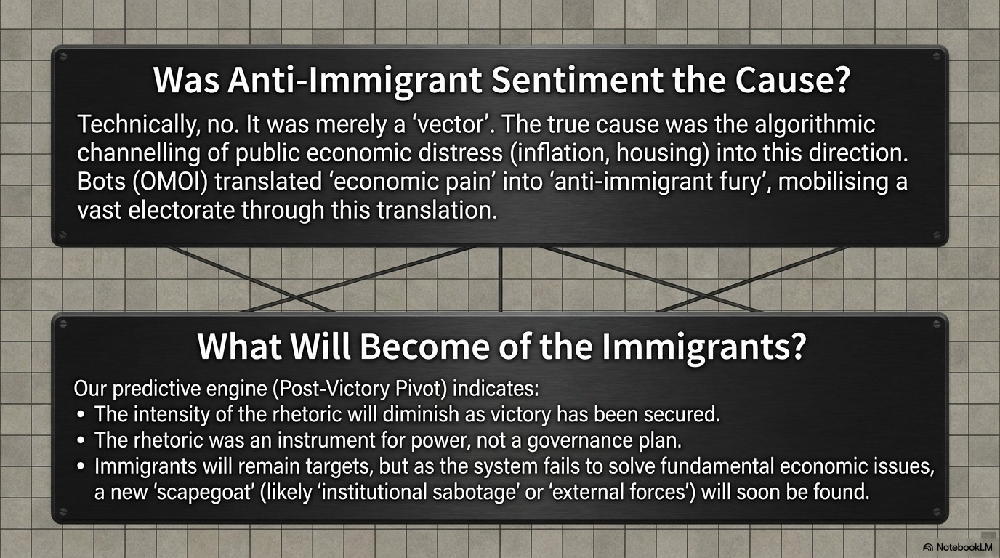

Computational Behavioural Analysis & Forensic Datamining

The human cost of rhetorical impossibility — immigrants facing structural uncertainty, UK 2026
High-fidelity probabilistic outcome vectors. 72.59% Gilt stress, 66.66% Cabinet cascade, 54.53% Snap Election probability. Time-Sealed.
View PredictionsStructural rupture validation post-Address. H4 Posterior: 0.84. Forensic verification of the Wes Streeting Trigger. Time-Sealed.
Read AuditState Opening of Parliament — Pre-Event Intelligence Briefing. Crisis Index 0.964. Time-Sealed.
Read BriefingComparing 13 May predictions vs. reality. Verification of institutional wedge dynamics. Time-Sealed.
Read ReportSystemic collapse of the social care sector and its multi-billion-pound impact on the NHS. Forensic Evidence.
Read BriefingForensic Audit of the UK Higher Education Industry (HEI). 24 institutions at risk of insolvency; 45% in deficit. Legislative Deadlock Risk.
View Case StudyWhy retrospective revocation of settled status is structurally impossible — and why the rhetoric still costs the UK.
Read BriefingEarned Settlement, the 10-year rule, and the legally feasible damage Reform's rhetoric provides cover for.
Read BriefingAnte–Post Delta Forensic Report. Quantifying the structural forces behind England's five-party fragmentation.
Read BriefingPre-election forensic briefing covering Wales, Scotland and England — the night before the vote.
Read BriefingUK Elections 2026 Essay v15. Analysing the edges of governability in a fragmented political landscape.
Read Briefing10y Gilt yields exceeding 5% are classified as "Policy Error Regime Flags." High-fidelity forensic models identify a 72.59% probability of breaching the 5.25% daily close threshold by May 18.
View Study EngineThe Mandelson vetting scandal creates a "Normative Contagion Field" around the Core Executive. V3.1 Analysis: 66.66% probability of exceeding 15 resignations by May 17.
Monitor ResignationsThe Hansard Society frames a King’s Speech defeat as a "de facto confidence proxy." High-fidelity analytics indicate a 54.53% probability of a Snap Dissolution in the May 18-22 window.
View Indicators| Risk Vector | Trigger Event | Critical Threshold | Probability / Window |
|---|---|---|---|
| Gilt Spiking | Fiscal Rhetoric + King’s Speech Uncertainty | > 5.25% daily close (10y Gilt) | 72.59% (May 14–20) |
| Cabinet Exodus | Mandelson Leak Amplification | > 15 total resignations | 66.66% (May 14–18) |
| General Election | King’s Speech Defeat (Proxy Vote) | PM Snap Election Call | 54.53% (May 18–22) |